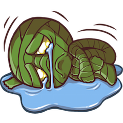
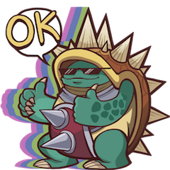
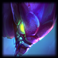
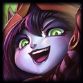

Patch 6.6
The one where we buff Kha'Zix.Guide
| Buff | Nerf | Lil' bit of both | Change | New |
|---|---|---|---|---|
 |
 |  |
 |  |
| Champion | Buff/Nerf/Change | Patch |
|---|---|---|
 |
|
Aurelion Sol, the Star Forger, will be released in this patch! |
 |
E's healing on allies down. | |
 |
Soldiers no longer apply Fervor of Battle. | |
 |
|
R stacks provide more health. |
 |
|
Passive speed duration up. E cooldown reduced. |
 |
E damage down. | |
 |
Passive deals less damage, but scales higher early. E slow and range down. |
|
 |
E bonus damage and R disable time down. | |
 |
|
Hammer Q's cost reduced. Base damage and ratio increased. |
 |
Less attack speed unless near Kalista's Oathsworn. W damage and sentinel laps down. R's pull range down. |
|
 |
|
Mantra shield's base and ratio increased. |
|  | |
Q and W cooldowns reduced. |
|  | W's ability power ratio and ally duration decreased. | |
 |
|
W gives more benefit if you've been double-hit, but less shield on single-hits. Missile now slower on the way out, faster back in. |
 |
|
Base Magic Resist up, and Magic Resist scaling introduced. Sapling duration up. |
 |
|
Base damage up, but ratio moved entirely to bonus attack damage. |
 |
Hunting monsters no longer roots them. W's damage increased, but basic attack reset removed. |
|
 |
|
Q mana cost down at early ranks. |
 |
Q duration reduced and cooldown increased. | |
 |
Q's scaling reduced at early levels. | |
 |
Underworld skin visuals are more readable. W card picker standardized across skins. |
ITEMS
| Item | Buff/Nerf/Change | Patch |
|---|---|---|
| Less damage on proc. | ||
 |
Recipe changed. Attack damage lowered, but now has a passive cleave again. |
|
 |
Build path is less ugly. | |
| Attack damage down. | ||
| Less armor and magic resist. Portals give more gold to enemies and now have ward health. |
HEXTECH CRAFTING & LOOT UPDATE
| Thing |
|---|
| Hextech Annie has been added as loot. Regional system rollout continues. |
BUGFIXES
| Fix |
|---|
| Bug where custom game lobbies sometimes forget to show you the invite button will get fixed ASAP. In the meantime, you can force the invite button to appear by switching teams. Rito says sorry. |
| Ziggs has taken over the crash reporting tool. |
| Chat rooms and private messages no longer random rearrange themselves upon closing a window. |
| Rift Herald now properly grants 2 Enchantment: Devourer stacks on assist. |
| Fixed a bug where selling or undoing a Tier 2 jungle item purchase would cap Smite at 1 charge until re-obtaining a Tier 2 jungle item. |
| Life steal and spell vamp now properly affect the bonus damage Rift Scuttler takes after being affected by hard CC. |
| The active effects of QSS and Mercurial Scimitar no longer purge the cooldown of Stormraider's Surge. |
UPCOMING SKINS
| Champion |
|---|
| Ashen Lord Aurelion Sol |
{kind=link}